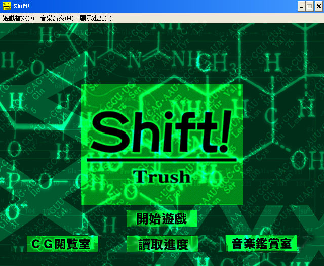
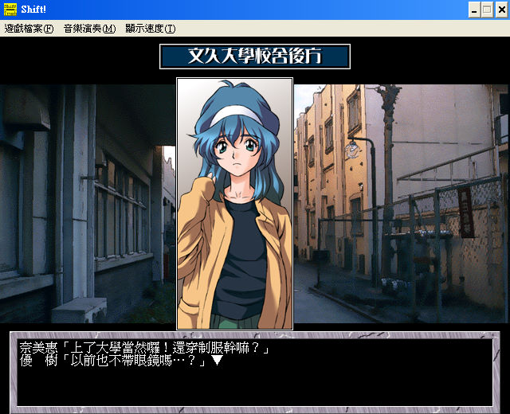

名稱：Shift!／基因方程式 (中文版)
簡介：歡樂盒1999年出品的18禁色情故事遊戲，故事描寫主角不小心喝下XYX藥水而成為女性，
於是千般尋求回復男兒身方法的過程。由於本遊戲採用多線式結局，因此整個的操作
界面採用最簡單的選單式，不同的選擇便會造成不同的劇情與結局。在色情方面仍以
靜態圖片為主，比較偏重於女同性戀，有些部份則稍微變態與煽情。整體而言，這個
遊戲應該算是一個很普通的色情遊戲而已。


保護：無
備註：進入遊戲後，若發現對話沒有停止（即滑鼠左鍵維持在按下的狀態），重按一下滑鼠
右鍵即可。